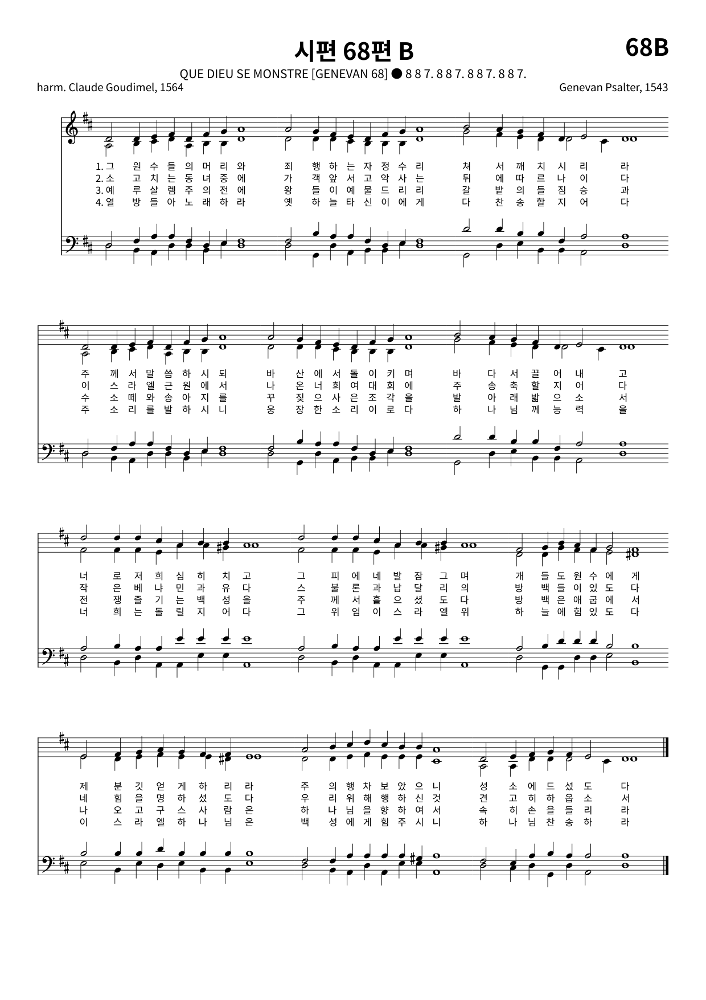

Psalm 68B
QUE DIEU SE MONSTRE [GENEVAN 68] · 8 8 7. 8 8 7. 8 8 7. 8 8 7.
English title: God Shall Arise, and by His Might
Tune: Genevan Psalter, 1543 · Harmony: Claude Goudimel, 1564 · Lyrics: Korean adaptation of Psalm 68 from the Korean Revised Version (AI draft adaptation · not yet theologically reviewed) · 4 stanzas
Psalm 68 is divided into 2 tunes: A B · This tune contains stanzas 7–10 of the Psalm 68 lyrics.
Score PDF MusicXML (for printing) MusicXML (for accompaniment, with prelude and repeats) Read Psalm 68 (Korean Revised Version)
Score
← Psalm 68A ListAccompaniment (in preparation)Psalm 69A →
Lyrics (Korean)
Stanza 1
그 원수들의 머리와
죄 행하는 자 정수리
쳐서 깨치시리라
주께서 말씀하시되
바산에서 돌이키며
바다서 끌어내고
너로 저희 심히 치고
그 피에 네 발 잠그며
개들도 원수에게
제 분깃 얻게 하리라
주의 행차 보았으니
성소에 드셨도다
그 원수들의 머리와
죄 행하는 자 정수리
쳐서 깨치시리라
주께서 말씀하시되
바산에서 돌이키며
바다서 끌어내고
너로 저희 심히 치고
그 피에 네 발 잠그며
개들도 원수에게
제 분깃 얻게 하리라
주의 행차 보았으니
성소에 드셨도다
Stanza 2
소고 치는 동녀 중에
가객 앞서고 악사는
뒤에 따르나이다
이스라엘 근원에서
나온 너희여 대회에
주 송축할지어다
작은 베냐민과 유다
스불론과 납달리의
방백들이 있도다
네 힘을 명하셨도다
우리 위해 행하신 것
견고히 하옵소서
소고 치는 동녀 중에
가객 앞서고 악사는
뒤에 따르나이다
이스라엘 근원에서
나온 너희여 대회에
주 송축할지어다
작은 베냐민과 유다
스불론과 납달리의
방백들이 있도다
네 힘을 명하셨도다
우리 위해 행하신 것
견고히 하옵소서
Stanza 3
예루살렘 주의 전에
왕들이 예물 드리리
갈밭의 들짐승과
수소 떼와 송아지를
꾸짖으사 은 조각을
발 아래 밟으소서
전쟁 즐기는 백성을
주께서 흩으셨도다
방백은 애굽에서
나오고 구스 사람은
하나님을 향하여서
속히 손을 들리라
예루살렘 주의 전에
왕들이 예물 드리리
갈밭의 들짐승과
수소 떼와 송아지를
꾸짖으사 은 조각을
발 아래 밟으소서
전쟁 즐기는 백성을
주께서 흩으셨도다
방백은 애굽에서
나오고 구스 사람은
하나님을 향하여서
속히 손을 들리라
Stanza 4
열방들아 노래하라
옛 하늘 타신 이에게
다 찬송할지어다
주 소리를 발하시니
웅장한 소리이로다
하나님께 능력을
너희는 돌릴지어다
그 위엄 이스라엘 위
하늘에 힘 있도다
이스라엘 하나님은
백성에게 힘 주시니
하나님 찬송하라
열방들아 노래하라
옛 하늘 타신 이에게
다 찬송할지어다
주 소리를 발하시니
웅장한 소리이로다
하나님께 능력을
너희는 돌릴지어다
그 위엄 이스라엘 위
하늘에 힘 있도다
이스라엘 하나님은
백성에게 힘 주시니
하나님 찬송하라